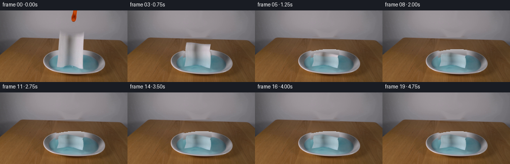
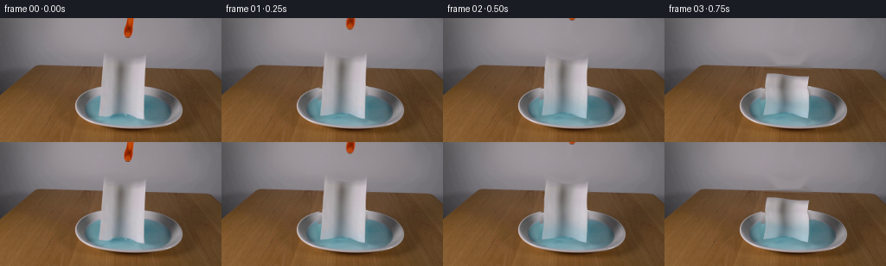
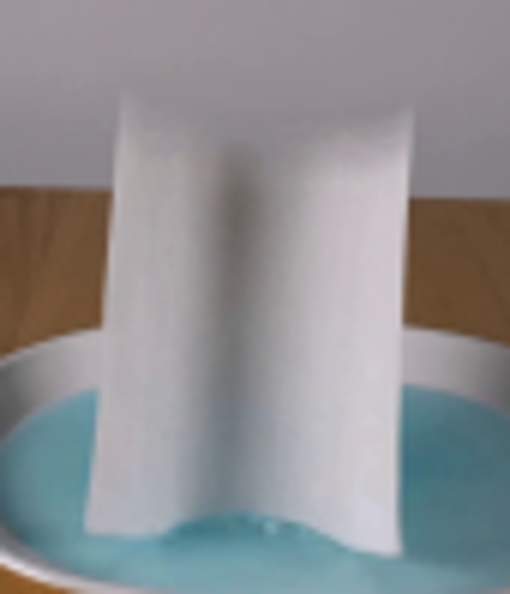

CODING AGENTS AS PIXEL WORLD MODELS
traex/GPT-6.1-Sol · 0128
点击播放 · 原生 RGB 像素
此结果可播放，但该运行尚未通过最终提交审核。页面展示不代表评测通过。
逐轮保存的候选
回放视频、检查图与代码变化。
每份候选均可单独播放。实际图片检查记录在下方工具轨迹中。
候选 01播放与检查图
点击播放 · 原生 RGB 像素


展开代码变化
--- 上一保存版本
+++ 本次保存版本
@@ -0,0 +1,208 @@
+from pathlib import Path
+import numpy as np
+import cv2
+from PIL import Image, ImageDraw
+from scipy.ndimage import gaussian_filter, map_coordinates
+from artifact_io import save
+
+ROOT=Path(__file__).resolve().parent
+H,W=144,256
+S=3
+rng=np.random.default_rng(12)
+source=np.asarray(Image.open(ROOT/'first_frame.png').convert('RGB')).copy()
+Y,X=np.mgrid[:H,:W].astype(float)
+
+def poly_mask(points):
+ im=Image.new('L',(W*4,H*4));d=ImageDraw.Draw(im)
+ d.polygon([(x*4,y*4) for x,y in points],fill=255)
+ return np.array(im.resize((W,H),Image.Resampling.LANCZOS))/255.
+
+# The background is reconstructed only in the area covered by the sheet/tool.
+clothmask=poly_mask([(119,38),(124,41),(136,45),(151,46),(169,39),(167,78),(167,119),(162,120),(150,116),(140,113),(132,112),(125,115),(112,116),(115,78)])
+clothmask=gaussian_filter(cv2.dilate(clothmask.astype(np.float32),np.ones((5,5),np.uint8)),.7)
+toolmask=poly_mask([(146,0),(156,0),(154,14),(152,21),(149,24),(144,22),(141.8,17),(143.6,9)])
+removemask=np.maximum(clothmask,gaussian_filter(cv2.dilate(toolmask.astype(np.float32),np.ones((3,3),np.uint8)),.5))
+base=cv2.inpaint(source,(removemask>.015).astype(np.uint8)*255,5,cv2.INPAINT_TELEA).astype(float)
+
+# Inpaint the broad occluded section of table using nearby unoccluded wood grain.
+for y in range(54,84):
+ for x in range(110,175):
+ if clothmask[y,x]<.005: continue
+ a=np.clip((x-109)/69,0,1)
+ left=np.mean(source[y,101:110].astype(float),axis=0)
+ right=np.mean(source[y,177:185].astype(float),axis=0)
+ # A continuation of the original tabletop, not an additional object.
+ grain=source[y,min(x+65,253)].astype(float)
+ grainmean=np.mean(source[y,178:251].astype(float),axis=0)
+ base[y,x]=(1-a)*left+a*right+0.50*(grain-grainmean)
+
+# Liquid and rim use separate geometries, so the back rim remains continuous.
+outer=np.sqrt(((X-149.1)/61.3)**2+((Y-103.25)/25.45)**2)
+inner=np.sqrt(((X-148.7)/49.7)**2+((Y-106.8)/17.6)**2)
+liquid=inner<1
+valid=liquid & (clothmask<.003)
+# Avoid the existing bright meniscus at the edge when fitting the water.
+valid &= inner<.96
+xx=(X-149)/50; yy=(Y-107)/18
+terms=[np.ones((H,W)),xx,yy,xx*xx,xx*yy,yy*yy,xx**3,yy**3,xx*xx*yy,xx*yy*yy]
+A=np.stack(terms,axis=-1)
+coefs=np.linalg.lstsq(A[valid],source[valid].astype(float),rcond=None)[0]
+wat=A@coefs
+# Local variations are subtle and are interpolated from the visible water.
+res=np.zeros((H,W,3))
+for c in range(3):
+ residual=(source[:,:,c].astype(float)-wat[:,:,c])*valid
+ num=gaussian_filter(residual,5)
+ den=gaussian_filter(valid.astype(float),5)
+ res[:,:,c]=num/(den+.001)
+wat+=res*.8
+wat=np.clip(wat,35,210)
+# Reflection on the back interior of the ceramic/metal dish.
+# Across an annulus the silver transitions smoothly into the blue meniscus.
+out_top=103.25-25.45*np.sqrt(np.maximum(0,1-((X-149.1)/61.3)**2))
+in_top=106.8-17.6*np.sqrt(np.maximum(0,1-((X-148.7)/49.7)**2))
+rpos=np.clip((Y-out_top)/(in_top-out_top+.01),0,1)
+metalshade=177-36*rpos-12*rpos*rpos-19*((X-145)/61)**2
+metal=np.stack([metalshade+0.5,metalshade-3.4,metalshade-1.1],axis=-1)
+metal+=7*np.exp(-((rpos-.06)/.08)**2)[:,:,None]
+plate=(outer<1.015) & (Y<101)
+recon=base.copy()
+recon[plate]=metal[plate]
+edge=np.clip((1.035-inner)/.065,0,1)
+recon=recon*(1-edge[:,:,None])+wat*edge[:,:,None]
+# Do not touch any observed background outside the originally occluded area.
+base=source.astype(float)*(1-clothmask[:,:,None])+recon*clothmask[:,:,None]
+# Remove the tool independently; homogeneous wall permits direct local inpainting.
+toolclear=cv2.inpaint(source,(gaussian_filter(cv2.dilate(toolmask.astype(np.float32),np.ones((3,3),np.uint8)),.6)>.015).astype(np.uint8)*255,4,cv2.INPAINT_TELEA)
+ta=gaussian_filter(cv2.dilate(toolmask.astype(np.float32),np.ones((3,3),np.uint8)),.5)
+base=base*(1-ta[:,:,None])+toolclear.astype(float)*ta[:,:,None]
+base=np.clip(base,0,255)
+
+# Parameterize the original creased towel as a material-coordinate texture.
+TW,TH=162,234
+V,U=np.mgrid[0:TH,0:TW].astype(float)
+U/=TW-1;V/=TH-1
+
+def initial_xy(u,v):
+ left=119.25-5.3*v
+ right=168.0-2.25*v
+ x=left+(right-left)*u
+ top=40.2+7.5*np.sin(np.pi*u)**1.15+1.7*u
+ bottom=113.8-4.0*np.sin(np.pi*u)**1.2+4.0*u
+ y=top*(1-v)+bottom*v
+ return x,y
+sx,sy=initial_xy(U,V)
+tex=cv2.remap(source.astype(np.float32),sx.astype(np.float32),sy.astype(np.float32),cv2.INTER_CUBIC,borderMode=cv2.BORDER_REPLICATE)
+# Imperceptible original paper fibers become visible with changing illumination.
+fiber=gaussian_filter(rng.normal(0,1,(TH,TW)),(.3,.45))
+
+NU,NV=30,48
+ug,vg=np.meshgrid(np.linspace(0,1,NU+1),np.linspace(0,1,NV+1))
+sxg,syg=initial_xy(ug,vg)
+
+# Small triangle rasterizer; no external renderer or models are used.
+def render_mesh(t):
+ # Gravity tips the unsupported sheet backwards into the liquid. The bottom
+ # edge was already resting in the dish, so there is no ballistic translation.
+ elapsed=max(0,t-.07)
+ f=1-np.exp(-(elapsed/.56)**2)
+ theta=1.52*f
+ s=1-vg
+ bottom=113.8-4*np.sin(np.pi*ug)**1.2+4*ug
+ top=40.2+7.5*np.sin(np.pi*ug)**1.15+1.7*ug
+ length=bottom-top
+ settle=1-np.exp(-max(0,t-.65)/.6)
+ fold=f**1.4
+ # Corrugations are the continuation of the original vertical crease.
+ foldheight=(1.1+4.6*np.sin(np.pi*s)*(.55+.45*np.cos(2*np.pi*ug))
+ +3.1*np.sin(2.6*np.pi*s+.35*ug)**2*(.65+.35*np.sin(2*np.pi*ug)))
+ depth=(-48*s+4.7*np.sin(3*np.pi*s)*np.sin(np.pi*s)
+ +3*np.sin(2*np.pi*ug)*np.sin(np.pi*s))*np.sin(theta)
+ z=length*s*np.cos(theta)+fold*foldheight
+ # A little transient flutter of the edge, damped immediately on the water.
+ flutter=2.7*np.sin(7.5*t+ug*5+s*7)*np.sin(np.pi*s)*f*np.exp(-1.3*t)
+ z+=flutter
+ px=sxg+(1.7*np.sin(2*np.pi*s)+1.2*np.sin(3*np.pi*ug)*s)*f
+ px+=1.7*f*s*np.exp(-t)*np.sin(t*6)
+ py=bottom+.43*depth-z
+ # Diffuse lighting follows the flattening material and capillary wetting.
+ wetfront=np.clip(t/2.2,0,1.1)
+ wet=1/(1+np.exp((1-V-wetfront)*20))
+ wet*=np.clip(t/.5,0,1)
+ wetcol=tex.copy()
+ wetcol[:,:,0]=tex[:,:,0]*.67+23
+ wetcol[:,:,1]=tex[:,:,1]*.77+32
+ wetcol[:,:,2]=tex[:,:,2]*.76+39
+ texture=tex*(1-wet[:,:,None]*.9)+wetcol*wet[:,:,None]*.9
+ # Give the horizontal folds locally varying light, while keeping the first
+ # image's subtle shading and fabric detail.
+ ridge=(2.9*np.cos(2*np.pi*U)+4*np.sin(5.2*np.pi*(1-V)+.35*U))*fold
+ texture+=ridge[:,:,None]+fiber[:,:,None]*.8*f
+ # Wet cloth continues to settle, without changing into a rigid object.
+ py+=.55*settle*np.sin(2*np.pi*ug)*np.sin(np.pi*s)
+ screen=np.stack((px*S,py*S),axis=-1)
+ points=np.stack((ug*(TW-1),vg*(TH-1)),axis=-1)
+ rgb=np.zeros((H*S,W*S,3),np.float32)
+ alpha=np.zeros((H*S,W*S),np.float32)
+ tris=[]
+ for j in range(NV):
+ for i in range(NU):
+ for ids in [[(j,i),(j+1,i),(j,i+1)],[(j+1,i),(j+1,i+1),(j,i+1)]]:
+ score=np.mean([depth[a,b]+.43*z[a,b] for a,b in ids])
+ tris.append((score,ids))
+ tris.sort(key=lambda v:v[0])
+ for _,ids in tris:
+ dst=np.array([screen[a,b] for a,b in ids],np.float32)
+ uv=np.array([points[a,b] for a,b in ids],np.float32)
+ minx=max(0,int(np.floor(dst[:,0].min()))-1);maxx=min(W*S,int(np.ceil(dst[:,0].max()))+2)
+ miny=max(0,int(np.floor(dst[:,1].min()))-1);maxy=min(H*S,int(np.ceil(dst[:,1].max()))+2)
+ if minx>=maxx or miny>=maxy: continue
+ # Barycentric interpolation at subpixel centers.
+ a,b,c=dst
+ det=(b[1]-c[1])*(a[0]-c[0])+(c[0]-b[0])*(a[1]-c[1])
+ if abs(det)<.0001: continue
+ gy,gx=np.mgrid[miny:maxy,minx:maxx].astype(np.float32)
+ gx+=.5;gy+=.5
+ wa=((b[1]-c[1])*(gx-c[0])+(c[0]-b[0])*(gy-c[1]))/det
+ wb=((c[1]-a[1])*(gx-c[0])+(a[0]-c[0])*(gy-c[1]))/det
+ wc=1-wa-wb
+ inside=(wa>=-.00005)&(wb>=-.00005)&(wc>=-.00005)
+ mapx=wa*uv[0,0]+wb*uv[1,0]+wc*uv[2,0]
+ mapy=wa*uv[0,1]+wb*uv[1,1]+wc*uv[2,1]
+ colors=cv2.remap(texture.astype(np.float32),mapx.astype(np.float32),mapy.astype(np.float32),cv2.INTER_LINEAR,borderMode=cv2.BORDER_REPLICATE)
+ rr=rgb[miny:maxy,minx:maxx];aa=alpha[miny:maxy,minx:maxx]
+ rr[inside]=colors[inside];aa[inside]=1
+ rgb=cv2.resize(rgb,(W,H),interpolation=cv2.INTER_AREA)
+ alpha=cv2.resize(alpha,(W,H),interpolation=cv2.INTER_AREA)
+ # Lens softness matches the supplied shallow, softly lit setup.
+ rgb=gaussian_filter(rgb,(.32,.32,0));alpha=gaussian_filter(alpha,.32)
+ return rgb,alpha,f
+
+frames=[source]
+for k in range(1,20):
+ t=k/4
+ rgb,alpha,f=render_mesh(t)
+ frame=base.copy()
+ # Modest capillary ripples, rapidly damped in the shallow dish.
+ # The radii are in water-plane coordinates, hence ellipses in the camera.
+ dist=np.sqrt(((X-143.5))**2+((Y-109)/.40)**2)
+ phase=dist-17*t
+ disturbance=(3.7*np.exp(-((phase-6)/3.2)**2)-2.8*np.exp(-((phase-10)/3.4)**2)
+ +2.1*np.exp(-((phase-19)/3.5)**2))*np.exp(-.85*t)
+ disturbance*=np.clip((1-inner)*11,0,1)
+ frame+=disturbance[:,:,None]*np.array([.7,1,1.1])[None,None,:]
+ # Diffuse contact shadow and absorption around the folded towel.
+ shadow=gaussian_filter(alpha,1.3)*f*.12*liquid
+ frame*=1-shadow[:,:,None]
+ frame=frame*(1-alpha[:,:,None])+rgb
+ # Released gripper withdraws straight upwards, keeping the camera fixed.
+ shift=-min(30,max(0,43*(t-.03)))
+ dx=1.7*min(1,t/.6)
+ M=np.array([[1,0,dx],[0,1,shift]],np.float32)
+ toolcol=cv2.warpAffine(source.astype(np.float32)*toolmask[:,:,None],M,(W,H),flags=cv2.INTER_LINEAR)
+ toola=cv2.warpAffine(toolmask.astype(np.float32),M,(W,H),flags=cv2.INTER_LINEAR)
+ frame=frame*(1-toola[:,:,None])+toolcol
+ frames.append(np.clip(np.rint(frame),0,255).astype(np.uint8))
+frames=np.array(frames,dtype=np.uint8)
+save(frames,ROOT)
+Image.fromarray(np.uint8(base)).save(ROOT/'.tmp/background.png')
可观测工具轨迹
实际执行的命令与返回图片。
命令 1exit 0
/bin/bash -lc 'ls -la && cat prompt.txt && cat GENERATION_RULES.md'
命令 2exit 0
/bin/bash -lc "cat artifact_io.py && python - <<'PY'
from PIL import Image
im=Image.open('first_frame.png');print(im.size);im.resize((1024,576)).save('.tmp/large.png')
PY"命令 3exit 0
/bin/bash -lc "python - <<'PY'
import importlib.util
for s in ['numpy','PIL','scipy','cv2'] : print(s, bool(importlib.util.find_spec(s)))
from PIL import Image
im=Image.open('first_frame.png');im.crop((100,25,185,124)).resize((510,594)).save('.tmp/towel.png')
PY"命令 4exit 0
/bin/bash -lc "python - <<'PY'
from PIL import Image
import numpy as np
im=np.array(Image.open('first_frame.png'))
for y in [40,50,60,70,77,80,83,86,90,100,110,117,122,127]:
print(y,[(x,im[y,x].tolist()) for x in [95,105,112,115,120,130,140,150,160,170,178,185,193,200]])
PY"命令 5exit 0
/bin/bash -lc "cat > generate.py <<'PY'
from pathlib import Path
import numpy as np
import cv2
from PIL import Image, ImageDraw
from scipy.ndimage import gaussian_filter, map_coordinates
from artifact_io import save
ROOT=Path(__file__).resolve().parent
H,W=144,256
S=3
rng=np.random.default_rng(12)
source=np.asarray(Image.open(ROOT/'first_frame.png').convert('RGB')).copy()
Y,X=np.mgrid[:H,:W].astype(float)
def poly_mask(points):
im=Image.new('L',(W*4,H*4));d=ImageDraw.Draw(im)
d.polygon([(x*4,y*4) for x,y in points],fill=255)
return np.array(im.resize((W,H),Image.Resampling.LANCZOS))/255.
# The background is reconstructed only in the area covered by the sheet/tool.
clothmask=poly_mask([(119,38),(124,41),(136,45),(151,46),(169,39),(167,78),(167,119),(162,120),(150,116),(140,113),(132,112),(125,115),(112,116),(115,78)])
clothmask=gaussian_filter(cv2.dilate(clothmask.astype(np.float32),np.ones((5,5),np.uint8)),.7)
toolmask=poly_mask([(146,0),(156,0),(154,14),(152,21),(149,24),(144,22),(141.8,17),(143.6,9)])
removemask=np.maximum(clothmask,gaussian_filter(cv2.dilate(toolmask.astype(np.float32),np.ones((3,3),np.uint8)),.5))
base=cv2.inpaint(source,(removemask>.015).astype(np.uint8)*255,5,cv2.INPAINT_TELEA).astype(float)
# Inpaint the broad occluded section of table using nearby unoccluded wood grain.
for y in range(54,84):
for x in range(110,175):
if clothmask[y,x]<.005: continue
a=np.clip((x-109)/69,0,1)
left=np.mean(source[y,101:110].astype(float),axis=0)
right=np.mean(source[y,177:185].astype(float),axis=0)
# A continuation of the original tabletop, not an additional object.
grain=source[y,min(x+65,253)].astype(float)
grainmean=np.mean(source[y,178:251].astype(float),axis=0)
base[y,x]=(1-a)*left+a*right+0.50*(grain-grainmean)
# Liquid and rim use separate geometries, so the back rim remains continuous.
outer=np.sqrt(((X-149.1)/61.3)**2+((Y-103.25)/25.45)**2)
inner=np.sqrt(((X-148.7)/49.7)**2+((Y-106.8)/17.6)**2)
liquid=inner<1
valid=liquid & (clothmask<.003)
# Avoid the existing bright meniscus at the edge when fitting the water.
valid &= inner<.96
xx=(X-149)/50; yy=(Y-107)/18
terms=[np.ones((H,W)),xx,yy,xx*xx,xx*yy,yy*yy,xx**3,yy**3,xx*xx*yy,xx*yy*yy]
A=np.stack(terms,axis=-1)
coefs=np.linalg.lstsq(A[valid],source[valid].astype(float),rcond=None)[0]
wat=A@coefs
# Local variations are subtle and are interpolated from the visible water.
res=np.zeros((H,W,3))
for c in range(3):
residual=(source[:,:,c].astype(float)-wat[:,:,c])*valid
num=gaussian_filter(residual,5)
den=gaussian_filter(valid.astype(float),5)
res[:,:,c]=num/(den+.001)
wat+=res*.8
wat=np.clip(wat,35,210)
# Reflection on the back interior of the ceramic/metal dish.
# Across an annulus the silver transitions smoothly into the blue meniscus.
out_top=103.25-25.45*np.sqrt(np.maximum(0,1-((X-149.1)/61.3)**2))
in_top=106.8-17.6*np.sqrt(np.maximum(0,1-((X-148.7)/49.7)**2))
rpos=np.clip((Y-out_top)/(in_top-out_top+.01),0,1)
metalshade=177-36*rpos-12*rpos*rpos-19*((X-145)/61)**2
metal=np.stack([metalshade+0.5,metalshade-3.4,metalshade-1.1],axis=-1)
metal+=7*np.exp(-((rpos-.06)/.08)**2)[:,:,None]
plate=(outer<1.015) & (Y<101)
recon=base.copy()
recon[plate]=metal[plate]
edge=np.clip((1.035-inner)/.065,0,1)
recon=recon*(1-edge[:,:,None])+wat*edge[:,:,None]
# Do not touch any observed background outside the originally occluded area.
base=source.astype(float)*(1-clothmask[:,:,None])+recon*clothmask[:,:,None]
# Remove the tool independently; homogeneous wall permits direct local inpainting.
toolclear=cv2.inpaint(source,(gaussian_filter(cv2.dilate(toolmask.astype(np.float32),np.ones((3,3),np.uint8)),.6)>.015).astype(np.uint8)*255,4,cv2.INPAINT_TELEA)
ta=gaussian_filter(cv2.dilate(toolmask.astype(np.float32),np.ones((3,3),np.uint8)),.5)
base=base*(1-ta[:,:,None])+toolclear.astype(float)*ta[:,:,None]
base=np.clip(base,0,255)
# Parameterize the original creased towel as a material-coordinate texture.
TW,TH=162,234
V,U=np.mgrid[0:TH,0:TW].astype(float)
U/=TW-1;V/=TH-1
def initial_xy(u,v):
left=119.25-5.3*v
right=168.0-2.25*v
x=left+(right-left)*u
top=40.2+7.5*np.sin(np.pi*u)**1.15+1.7*u
bottom=113.8-4.0*np.sin(np.pi*u)**1.2+4.0*u
y=top*(1-v)+bottom*v
return x,y
sx,sy=initial_xy(U,V)
tex=cv2.remap(source.astype(np.float32),sx.astype(np.float32),sy.astype(np.float32),cv2.INTER_CUBIC,borderMode=cv2.BORDER_REPLICATE)
# Imperceptible original paper fibers become visible with changing illumination.
fiber=gaussian_filter(rng.normal(0,1,(TH,TW)),(.3,.45))
NU,NV=30,48
ug,vg=np.meshgrid(np.linspace(0,1,NU+1),np.linspace(0,1,NV+1))
sxg,syg=initial_xy(ug,vg)
# Small triangle rasterizer; no external renderer or models are used.
def render_mesh(t):
# Gravity tips the unsupported sheet backwards into the liquid. The bottom
# edge was already resting in the dish, so there is no ballistic translation.
elapsed=max(0,t-.07)
f=1-np.exp(-(elapsed/.56)**2)
theta=1.52*f
s=1-vg
bottom=113.8-4*np.sin(np.pi*ug)**1.2+4*ug
top=40.2+7.5*np.sin(np.pi*ug)**1.15+1.7*ug
length=bottom-top
settle=1-np.exp(-max(0,t-.65)/.6)
fold=f**1.4
# Corrugations are the continuation of the original vertical crease.
foldheight=(1.1+4.6*np.sin(np.pi*s)*(.55+.45*np.cos(2*np.pi*ug))
+3.1*np.sin(2.6*np.pi*s+.35*ug)**2*(.65+.35*np.sin(2*np.pi*ug)))
depth=(-48*s+4.7*np.sin(3*np.pi*s)*np.sin(np.pi*s)
+3*np.sin(2*np.pi*ug)*np.sin(np.pi*s))*np.sin(theta)
z=length*s*np.cos(theta)+fold*foldheight
# A little transient flutter of the edge, damped immediately on the water.
flutter=2.7*np.sin(7.5*t+ug*5+s*7)*np.sin(np.pi*s)*f*np.exp(-1.3*t)
z+=flutter
px=sxg+(1.7*np.sin(2*np.pi*s)+1.2*np.sin(3*np.pi*ug)*s)*f
px+=1.7*f*s*np.exp(-t)*np.sin(t*6)
py=bottom+.43*depth-z
# Diffuse lighting follows the flattening material and capillary wetting.
wetfront=np.clip(t/2.2,0,1.1)
wet=1/(1+np.exp((1-V-wetfront)*20))
wet*=np.clip(t/.5,0,1)
wetcol=tex.copy()
wetcol[:,:,0]=tex[:,:,0]*.67+23
wetcol[:,:,1]=tex[:,:,1]*.77+32
wetcol[:,:,2]=tex[:,:,2]*.76+39
texture=tex*(1-wet[:,:,None]*.9)+wetcol*wet[:,:,None]*.9
# Give the horizontal folds locally varying light, while keeping the first
# image's subtle shading and fabric detail.
ridge=(2.9*np.cos(2*np.pi*U)+4*np.sin(5.2*np.pi*(1-V)+.35*U))*fold
texture+=ridge[:,:,None]+fiber[:,:,None]*.8*f
# Wet cloth continues to settle, without changing into a rigid object.
py+=.55*settle*np.sin(2*np.pi*ug)*np.sin(np.pi*s)
screen=np.stack((px*S,py*S),axis=-1)
points=np.stack((ug*(TW-1),vg*(TH-1)),axis=-1)
rgb=np.zeros((H*S,W*S,3),np.float32)
alpha=np.zeros((H*S,W*S),np.float32)
tris=[]
for j in range(NV):
for i in range(NU):
for ids in [[(j,i),(j+1,i),(j,i+1)],[(j+1,i),(j+1,i+1),(j,i+1)]]:
score=np.mean([depth[a,b]+.43*z[a,b] for a,b in ids])
tris.append((score,ids))
tris.sort(key=lambda v:v[0])
for _,ids in tris:
dst=np.array([screen[a,b] for a,b in ids],np.float32)
uv=np.array([points[a,b] for a,b in ids],np.float32)
minx=max(0,int(np.floor(dst[:,0].min()))-1);maxx=min(W*S,int(np.ceil(dst[:,0].max()))+2)
miny=max(0,int(np.floor(dst[:,1].min()))-1);maxy=min(H*S,int(np.ceil(dst[:,1].max()))+2)
if minx>=maxx or miny>=maxy: continue
# Barycentric interpolation at subpixel centers.
a,b,c=dst
det=(b[1]-c[1])*(a[0]-c[0])+(c[0]-b[0])*(a[1]-c[1])
if abs(det)<.0001: continue
gy,gx=np.mgrid[miny:maxy,minx:maxx].astype(np.float32)
gx+=.5;gy+=.5
wa=((b[1]-c[1])*(gx-c[0])+(c[0]-b[0])*(gy-c[1]))/det
wb=((c[1]-a[1])*(gx-c[0])+(a[0]-c[0])*(gy-c[1]))/det
wc=1-wa-wb
inside=(wa>=-.00005)&(wb>=-.00005)&(wc>=-.00005)
mapx=wa*uv[0,0]+wb*uv[1,0]+wc*uv[2,0]
mapy=wa*uv[0,1]+wb*uv[1,1]+wc*uv[2,1]
colors=cv2.remap(texture.astype(np.float32),mapx.astype(np.float32),mapy.astype(np.float32),cv2.INTER_LINEAR,borderMode=cv2.BORDER_REPLICATE)
rr=rgb[miny:maxy,minx:maxx];aa=alpha[miny:maxy,minx:maxx]
rr[inside]=colors[inside];aa[inside]=1
rgb=cv2.resize(rgb,(W,H),interpolation=cv2.INTER_AREA)
alpha=cv2.resize(alpha,(W,H),interpolation=cv2.INTER_AREA)
# Lens softness matches the supplied shallow, softly lit setup.
rgb=gaussian_filter(rgb,(.32,.32,0));alpha=gaussian_filter(alpha,.32)
return rgb,alpha,f
frames=[source]
for k in range(1,20):
t=k/4
rgb,alpha,f=render_mesh(t)
frame=base.copy()
# Modest capillary ripples, rapidly damped in the shallow dish.
# The radii are in water-plane coordinates, hence ellipses in the camera.
dist=np.sqrt(((X-143.5))**2+((Y-109)/.40)**2)
phase=dist-17*t
disturbance=(3.7*np.exp(-((phase-6)/3.2)**2)-2.8*np.exp(-((phase-10)/3.4)**2)
+2.1*np.exp(-((phase-19)/3.5)**2))*np.exp(-.85*t)
disturbance*=np.clip((1-inner)*11,0,1)
frame+=disturbance[:,:,None]*np.array([.7,1,1.1])[None,None,:]
# Diffuse contact shadow and absorption around the folded towel.
shadow=gaussian_filter(alpha,1.3)*f*.12*liquid
frame*=1-shadow[:,:,None]
frame=frame*(1-alpha[:,:,None])+rgb
# Released gripper withdraws straight upwards, keeping the camera fixed.
shift=-min(30,max(0,43*(t-.03)))
dx=1.7*min(1,t/.6)
M=np.array([[1,0,dx],[0,1,shift]],np.float32)
toolcol=cv2.warpAffine(source.astype(np.float32)*toolmask[:,:,None],M,(W,H),flags=cv2.INTER_LINEAR)
toola=cv2.warpAffine(toolmask.astype(np.float32),M,(W,H),flags=cv2.INTER_LINEAR)
frame=frame*(1-toola[:,:,None])+toolcol
frames.append(np.clip(np.rint(frame),0,255).astype(np.uint8))
frames=np.array(frames,dtype=np.uint8)
save(frames,ROOT)
Image.fromarray(np.uint8(base)).save(ROOT/'.tmp/background.png')
PY
python generate.py"视觉工具实际返回图片 1

视觉工具实际返回图片 2

保存候选 1 份；完成命令 5 次；可验证图片返回 2 张。原始 API 响应与完整日志保留在本地。